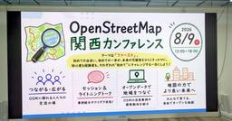
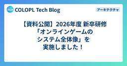

組織・マネジメント・QA直近7日・スコア順
このトピックだけを購読する: RSS

ファインディの開発文化 - 小さな積み重ねと、それを支える仕組み 11
11 Findy Tech Blog
Findy Tech Blog
はてブ11 · 仕組みを掘る
組織・マネジメント・QA
こんにちは。ファインディ株式会社でプリンシパルエンジニアをしている戸田です。 このテックブログではこれまでファインディの開発組織の取り組みを紹介してきました。一方で、開発組織の文化を紹介した記事はあまりありませんでした。 そこで今回は、弊社のことをさらに知ってもらうためにファインディの開発文化を紹介します。日々の開発の進め方から、それを組織に広げて続けるための仕組み、そして文化を支えているものまで、なぜそうしているのかと合わせて紹介します。ファインディの開発組織に興味を持ってくださっている方や、組織の文化づくりに取り組んでいる方の参考になると幸いです。 開発の土台をつくる コード生成前の準備 …
2日前

テスト設計工数を約50%削減——QA業務効率化システム「DAAQ」を支える技術の裏側 1 Blog on DeNA Engineering
Blog on DeNA Engineering
仕組みを掘る · 数字のインパクト
設計・SRE・基盤 / 組織・マネジメント・QA
はじめに こんにちは。IT本部AI・データ戦略統括部所属の黄です。 DeNAのIT本部では、QA業務の効率化を目指して「DAAQ（DeNA AI Advanced Quality）」というシステムの開発・運用を進めています。本記事では、DAAQの中でも中心的な取り組みであるテスト設計支援領域の全社展開までの歩みと、それを支えるシステムアーキテクチャを紹介します。 後半では、現 …
3日前

geohash について知ったので、パン屋巡りに使えないか考えてみた 1 エムスリーテックブログ
エムスリーテックブログ
設計・SRE・基盤 · 組織・マネジメント・QA
設計・SRE・基盤 / 組織・マネジメント・QA
※ 記事とは何の関係もない、夏の旅行で撮った馬の写真 メディカルマーケティングオートメーションチームの山本（@hiro_o918）です。 本記事はメディカルマーケティングオートメーションチーム(Unit2)のブログリレー2日目の記事です。 前回は中村さんの「Rustで自己言及プログラムであるQuineを作っていく」でした。 最近、場所をハッシュ値で持つ geohash という概念を学びました。休日にたまにパン屋巡りをするのですが、これを応用すれば効率的にパン屋を巡れるんじゃないかと思いついたので、考えたことを書いていこうと思います。 ただ、人間の胃には限界があるため、実際にこのとおり巡るのは難…
2日前

歴史から紐解く、開発から9年が経過したサーバーレスサービスの「変化への追従」 1 ZOZO TECH BLOG
ZOZO TECH BLOG
AI・LLM · 設計・SRE・基盤 · 組織・マネジメント・QA
AI・LLM / 設計・SRE・基盤 / 組織・マネジメント・QA
はじめに こんにちは、ZOZOMO部FBZブロックの杉田です。普段はFulfillment by ZOZO（以下、FBZ）が提供するAPIシステムを開発・運用しています。昨年からは、社内における開発者向けAI支援ツールの推進を担う専門チームも兼務しています。 FBZ APIは2017年にServerless Frameworkで構築を開始し、現在はAWS Lambda（以下、Lambda）の関数500本超、40個以上のスタックで稼働しています。サーバーレス自体の運用負荷は低い一方、9年間でツールの有償化やプラグインの保守停止、ランタイムのEOL、リソース上限といった「周辺環境の変化」への追従を…
2日前

最大53%！小さな改善を積み重ねてカートの表示時間を短縮した話 1 BASEプロダクトチームブログ
組織・マネジメント・QA
組織・マネジメント・QA
はじめに こんにちは。BASE Departmentでバックエンドエンジニアをしている白数（かじゅ）です。 私たちのチームでは今年の夏、カートの表示速度を改善するプロジェクトに取り組みました。 ここでいう「速度」は、サーバーの処理時間だけを指すものではなく、購入者がボタンを押してから次の画面が表示されるまで、実際に待っている時間を指します。 計測を始めた時点で特に表示に時間がかかっていたのは、PAY IDアプリで「購入手続きに進む」を押してから購入確認画面が表示されるまでの経路でした。 一度に大きく作り替えず、小さく変えては数字を見る、を繰り返しフロントエンドとバックエンド合わせてマージ（リリ…
3日前

割り込みの多い CRE でスクラムは回るのか ─ 未経験スクラムマスターが 4 か月試したこと 1 弁護士ドットコム株式会社 Creators’ blog
弁護士ドットコム株式会社 Creators’ blog
組織・マネジメント・QA
組織・マネジメント・QA
割り込みの多いCREで、スクラムマスター未経験の私がスクラムを再導入。兼務の少人数チームでの判断ルール、実績からの割り込みバッファ算出、運営の自動化、ステークホルダーの巻き込みまで、泥臭く回してきた4か月の記録です。
3日前

オンボーディングをAIエージェントに任せたら、もはや別ゲーだった Blog on DeNA Engineering
AI・LLM · 組織・マネジメント・QA
AI・LLM / 組織・マネジメント・QA
メンバーの立ち上げもAI Nativeに チームに人が入るたびに同じ説明を繰り返していませんか？散らばった資料から使えそうなものを探してませんか？重い腰を上げて作成したオンボーディング資料集、もう古くなってませんか？ 本記事では部のオンボーディングをGitHubリポジトリに集約し、Claude Codeを伴走させる仕組みを作った話を紹介します。 とくに以下のような方にオススメ …
4日前

OTLP/HTTPのJSON形式（http/json）でトレースやログを送信できるようになりました ほか4件のアップデート Mackerel ブログ #mackerelio
Mackerel ブログ #mackerelio
AI・LLM · 組織・マネジメント・QA
AI・LLM / 組織・マネジメント・QA
こんにちは！Mackerel チーム CRE の五十嵐（id:masarasi）です。今回のアップデート内容をお知らせいたします。 OTLP/HTTPのJSON形式（http/json）でトレースやログを送信できるようになりました mackerel-agentが環境変数で指定されたプロキシを利用せずに通信できるようになりました mackerel-agentのアップデートをおこなう際の注意点 不具合を修正しました ステータスページのコンポーネントにログ機能を追加しました OTLP/HTTPのJSON形式（http/json）でトレースやログを送信できるようになりました Mackerelのトレース…
5日前

デバイス操作はAIエージェントの時代へ。mobile-mcpを活用したAndroid UI/E2Eテストの挑戦
AI・LLM · フロントエンド・デザイン · 組織・マネジメント・QA
LINEヤフー Tech Blog (LY Corporation Tech BlogAI・LLM / フロントエンド・デザイン / 組織・マネジメント・QA
こんにちは。LINEでAndroidアプリの開発を担当しているMoriです。この記事では、DroidKaigi 2026で発表した「デバイス操作はAIエージェントの時代へ。mobile-mcpを活用し...
5日前

自由な地図の力でより良い未来を作ろう 〜OpenStreetMap関西カンファレンス2026レポート〜 さくらのナレッジ
さくらのナレッジ
組織・マネジメント・QA
組織・マネジメント・QA
はじめに さくらのナレッジ編集部の法林です。 2026年8月9日(日)に、株式会社アジャイルウェア大阪オフィスにてOpenStreetMap関西カンファレンス2026が開催されました。本記事ではこのイベントの模様をレポー […]
5日前

【資料公開】2026年度 新卒研修「オンラインゲームのシステム全体像」を実施しました！ 2 COLOPL Tech Blog
COLOPL Tech Blog
組織・マネジメント・QA
組織・マネジメント・QA
こんにちは、サーバー基盤グループ LCE チームの仲山です。LCE は Launch Coordination Engineering の略で、新作タイトルの立ち上げを支援するチームです。普段はゲームタイトルを横断したサーバー基盤の開発、保守、運用などを担当しています。 コロプラでは毎年、新卒向けの研修を実施しています。前半は全職種共通で、後半は専門性を深める職種別研修に分かれます。本記事では、そのうち2026年度にバックエンドエンジニア向けに実施した「オンラインゲームのシステム全体像」を紹介します。この研修は職種別研修の序盤に置かれていて、ここで全体の地図を手に入れてから、アプリケーション設…
5日前